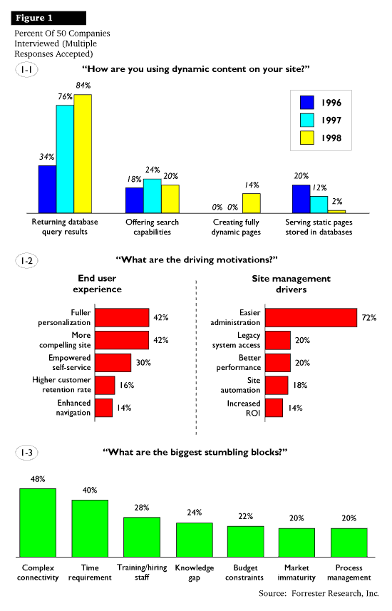

Första generationens webb-sidor, som ofta var gjorda av en duktig nätverkstekniker, har de företag som var tidigt ute ersatt. Andra generationens intranet tog ofta informationsavdelningen kommandot över. Man såg det som en ytterligare ett sätt att publicera personaltidningen och organisations meddelanden. Många företag står idag inför nya utmaningar; Att göra sitt intranet till ett arbetsverktyg istället för enbart en anslagstavla. Att utveckla en statisk Internet webbplats till en plats för kommunikation och interaktion. Andra företag och organisationer vill idag dra lärdom av andras erfarenheter och går på tredje generationens lösningar direkt.
Begreppet "Content Management" har används för att beskriva denna typ av lösningar. Att skilja innehåll från presentation blir det viktiga. I den första generationens lösningar var det att kunna editera i webbsidornas kod (s.k HTML - HyperText Markup Language) som var den kritiska kunskapen. Lagringsformatet, och till lika det enda presentationsformatet, var webbsidan. I nästa fas blev det istället konvertering mellan de traditionella desktop-formaten; word, framemaker, pagemaker etc., och html som blev den kritiska punkten. I tredje generations lösningar är det istället återanvändbart innehåll i en databas, till vilket olika layouter kan knytas, som blir den kritiska komponenten.
Nedan några olika klipp från några analysföretags rapporter och tidskrifts artiklar om vad begreppet "Content Management" står för, motiv för denna typ av lösningar och status på var marknaden verkar befinna sig. Vilka står nu inför att ta steget in i den tredje generationens lösningar? Vilken typ av tillämpningar är viktiga? Vilka branscher?
From Meta Group
From Managing Content on the Web, Patricia Seybold Group
Advanced companies are on their way to a new database-driven
content architecture. Why? Today’s sites consist of thousands of
handcrafted pages served up from a rat’s nest of flat files, each
limply managed by the tool created them.
From Content Road Map,
Forrester Report, Interactive
Technology Strategies
Att utveckla och vårda innehållet blir allt viktigare, och ställer större krav:
IS managers are looking for ways to meet these and other demands
more
effectively. There's a dramatic need for tools that make it easy
to manage
and integrate content.
Från artikeln Automating
content -- As managing content on Web sites
becomes
crucial, tools evolve to supplant home-grown systems
Fyra av fem kommer att efterfråga webb-applikationer för
elektronisk handel.
Enligt Internet/Intranet
Markets, Opportunities, and Trends (1998) från
Zona Research 1)
Att tillhandahålla helt dynamiskt skapade sidor var det 1997 ingen
som
gjorde, enligt en undersökning från Forrester. 1998 var
siffran ännu bara
14 procent för de som tillhandahöll dynamiskt skapade sidor.
2)
Firms Want Interesting, Manageable Sites:
Making the end user experience more compelling and the site more
manageableare the drivers pushing our respondents toward more
dynamic content.
Firms Want Interesting, Manageable Sites
40% of their content comes from databases today -- they predict
that number will rise to 65% in 1998. They will spend heavily to
migrate
content into databases.
Från Content Road Map,
Forrester Report, Interactive
Technology Strategies
Mycket amerikanska siffor! Avslutningsvis några ord om läget i Sverige:
- Även bland svenska företag märks att Internetstrategierna
ökar kraftigt i
betydelse, säger Christina Törneman på IDC i Sverige.
... företag planerade att öka sina investeringar inom
Internetområdet,
såsom intranät, extranät och webbutveckling, med
50 till 60 procent de
närmaste åren.
Från artikeln Internet
viktigare än IT
Computer Sweden nr 38 1998 i avdelningen Ekonomi
| Now | In 6 months | In 12 months | In 24 months | |
| 80 | 68 | 63 | 66 | |
| Internal employee communication | 65 | 73 | 68 | 62 |
| Customer service/help desk | 46 | 44 | 59 | 50 |
| Document management | 41 | 40 | 55 | 52 |
| Scheduling/calendaring/groupware | 37 | 42 | 50 | 48 |
| Extension of existing legacy apps. | 37 | 32 | 45 | 41 |
| Human resource management | 35 | 27 | 39 | 39 |
| Electronic catalog | 31 | 29 | 47 | 42 |
| Content management | 28 | 26 | 27 | 28 |
| Electronic commerce | 25 | 21 | 47 | 48 |
| Interactive product demonstration | 23 | 10 | 28 | 23 |
| Sales force automation | 18 | 18 | 40 | 38 |
| Order processing | 18 | 23 | 42 | 46 |
| Financial applications | 17 | 19 | 37 | 40 |
| Self-service order tracking | 17 | 14 | 27 | 39 |
| Video/audio conferencing | 14 | 15 | 31 | 37 |
| Enterprise resource planning | 11 | 13 | 22 | 30 |
| Distance learning | 11 | 13 | 32 | 35 |
| Competitive analysis | 11 | 12 | 30 | 25 |
| Manufacturing resource planning | 3 | 5 | 13 | 16 |
| Other | 38 | 13 | 15 | 20 |
| NNTP | 0 | 9 | 14 | 19 |
| N=137; multiple responses allowed |
"The Zona Enterprise Usage Study (ZEUS) is a time-series industry tracking study that runs quarterly and surveys samples of corporate IT purchasers. Topics covered include buyer perceptions of products, services, and technologies; corporate strategies and budgets; and product and technology preferences. The Q2 1998 Application Development section of ZEUS was fielded in June 1998 and published in July 1998. The total ZEUS sample pool comprises approximately 1,300 IT professionals and targets the appropriate subset of individuals who qualify as having actual purchasing authority rather than just influence.For the Q2 Application Development section of ZEUS, 229 respondents were qualified based on the following parameters:
2) Percents Of 50 Companies
Interviewed
